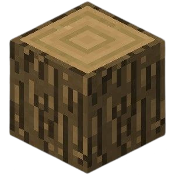

IntroduçãoMinecraft é um jogo do tipo sandbox, ou seja, não tem um objetivo fixo — você decide o que fazer. Desenvolvido pela Mojang Studios, ele permite explorar, construir e sobreviver em um mundo totalmente feito de blocos. O mapa é gerado automaticamente a cada novo jogo, o que significa que nenhum mundo é igual ao outro. A grande graça está na liberdade: você pode criar desde casas simples até cidades gigantes, sistemas automáticos e até computadores dentro do jogo.